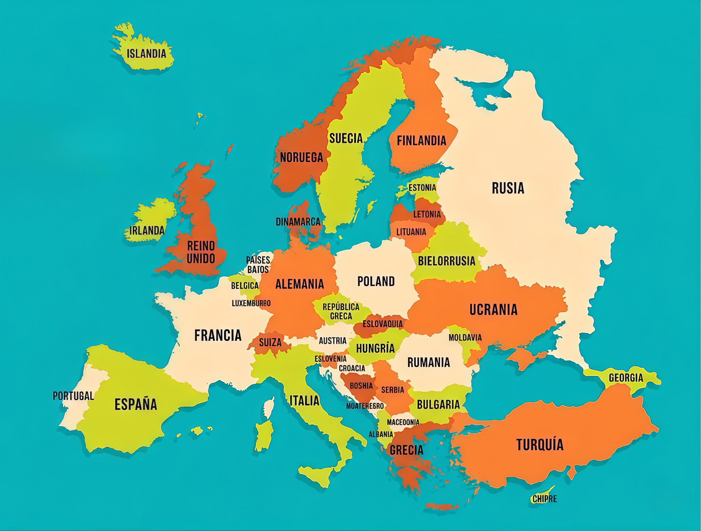

Laboratorio No. 2: Mapas de Imagen
(Mapeado de Imagen, áreas Clicables)
Apellidos y Nombres:
Gonzales Cortez Ariel Alejandro
Fecha:
14/Abril/2026
Cédula de Id.
13761007 LP
Materia:
INF 113
Par:
"A"
Docente:
Ph. D. José María Tapia B.
